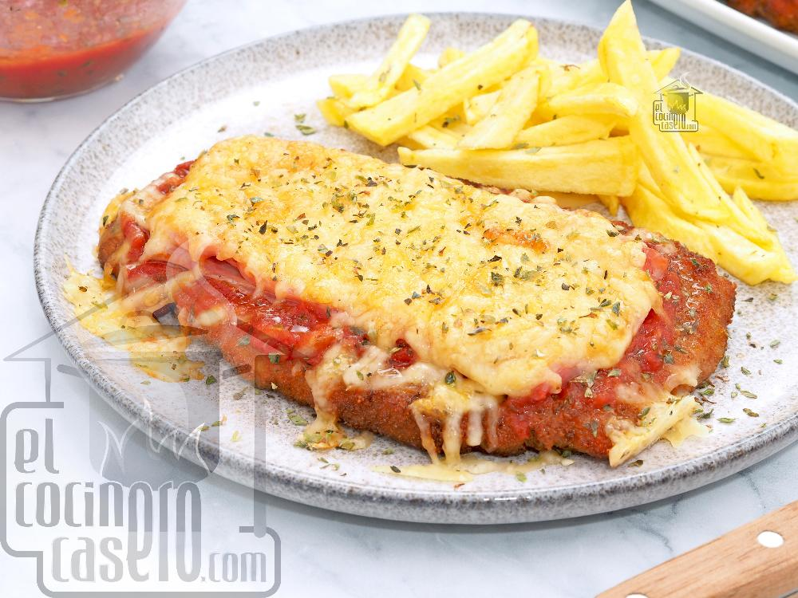

Milanesa a la Napolitana

Description
Milanesa napolitana is a traditional Argentine dish originating from Buenos Aires. It consists of a milanesa steak that's breaded, fried, then topped with a slice of ham, tangy tomato sauce, and thick slices of mozzarella, which will melt under the broiler.
It is typically served with french fries on the side. If there are any leftovers, they can be used to make delicious sandwiches called sánguche de milanesa. Milanesa napolitana was supposedly invented in the 1930s or 1940s in a restaurant called Nápoli, hence the name.
Ingredients
- Beef
- Eggs
- Breadcrums
- Mozzarella
- Tomato sauce
- Cured Ham
- Olive Oil
Steps
- Prepare Cutlets: Beat to desired thickness
- Coat Cutlets: Dip in egg mixture,then in Breadcrums
- Chill: Refrigerate breaded cutlets for several hours or overnight.
- Heat Oil: Pour ½ inch of oil into a pan and heat.
- Fry Cutlets: Cook until golden, then drain on paper towels.
- Arrange & Top: Place in baking tray, add prosciutto, tomato sauce, and mozzarella.
- Broil & Serve: Broil for 5-9 minutes, then serve.
Home